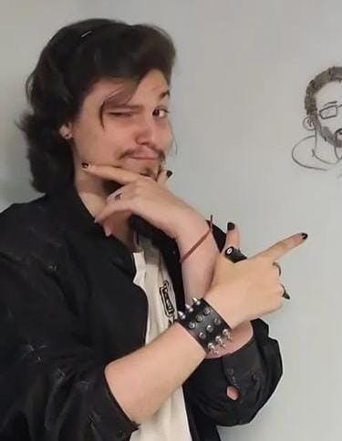
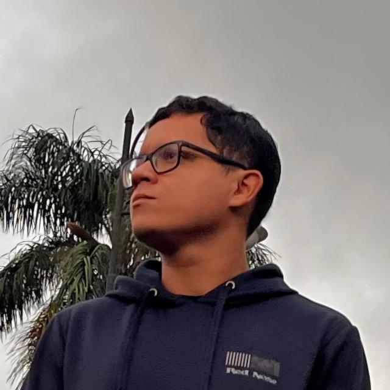
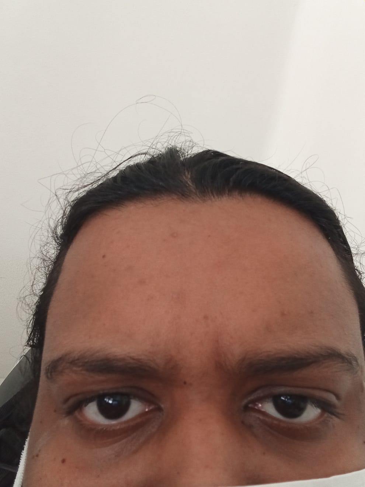

Z3 Studios
A Z3 Studios é um estúdio independente de desenvolvimento de jogos digitais e experiências interativas, criado com o propósito de explorar novas formas de interação entre o jogador e o ambiente digital. Atuando na interseção entre tecnologia, arte e música, o estúdio busca desenvolver projetos que vão além do entretenimento tradicional, propondo experiências mais imersivas, criativas e significativas.
Desde sua fundação, a Z3 Studios tem como foco a experimentação e a inovação, explorando diferentes plataformas como WebGL, dispositivos mobile e realidade virtual. A equipe trabalha com uma abordagem multidisciplinar, integrando programação, design visual e sonoplastia para criar experiências completas e envolventes.
História
A Z3 Studios surgiu a partir da iniciativa de seus fundadores em transformar projetos acadêmicos e experimentais em produtos reais. Com forte presença em game jams, projetos educacionais e colaborações, o estúdio consolidou sua base através do desenvolvimento contínuo de jogos e experiências interativas.
Ao longo do tempo, a equipe participou da criação de diversos projetos, incluindo jogos voltados para educação, experiências em realidade virtual e produções independentes com foco em criatividade e inovação. Essa trajetória contribuiu para o desenvolvimento de um estilo próprio, baseado na experimentação e na busca por novas formas de jogar.
Missão
Desenvolver experiências interativas que unam tecnologia, arte e música, proporcionando ao jogador novas formas de se expressar e interagir com o mundo digital.A Z3 Studios busca criar projetos que não apenas entretenham, mas também inspirem e tragam novas perspectivas sobre o que um jogo pode ser.
Visão
Ser reconhecida como um estúdio criativo e inovador no cenário de desenvolvimento de jogos independentes, destacando-se pela exploração de novas mecânicas de interação, especialmente através da integração entre música, dispositivos físicos e ambientes digitais.
Diferenciais
Um dos principais diferenciais da Z3 Studios está na forma como aborda o desenvolvimento de jogos. Ao invés de seguir apenas modelos tradicionais, o estúdio busca constantemente inovar na forma de interação, explorando novas possibilidades de controle, narrativa e experiência do usuário.
Entre esses diferenciais, destaca-se a integração com música e instrumentos reais, permitindo que o jogador utilize elementos do mundo físico como forma de interação dentro do jogo. Essa abordagem cria experiências mais imersivas e aproxima o jogador do processo criativo.
Além disso, a Z3 Studios atua com projetos multiplataforma, desenvolvendo soluções que podem ser utilizadas em navegadores, dispositivos móveis e ambientes de realidade virtual, ampliando o alcance e a acessibilidade de seus projetos.
Projetos
A Z3 Studios já desenvolveu diversos projetos ao longo de sua trajetória, incluindo jogos independentes, experiências interativas e participações em eventos como game jams. Muitos desses projetos exploram temas como educação, acessibilidade e inovação na interação com o usuário.
Entre os trabalhos realizados, destacam-se experiências em WebGL, jogos para dispositivos móveis e projetos em realidade virtual, sempre com foco na criatividade e na experimentação. Cada projeto contribui para o crescimento do estúdio e para a construção de uma identidade própria.
Equipe
José Paulo Lopes Figueiredo
Fundador, Diretor Geral e Produtor

Marcel Alkindar Soares
Co-founder e Diretor Artístico Visual

Gabriel Santos
Co-founder e Diretor de Sonoplastia

Axl Alyson Lopes Fontes
Co-founder e Programador